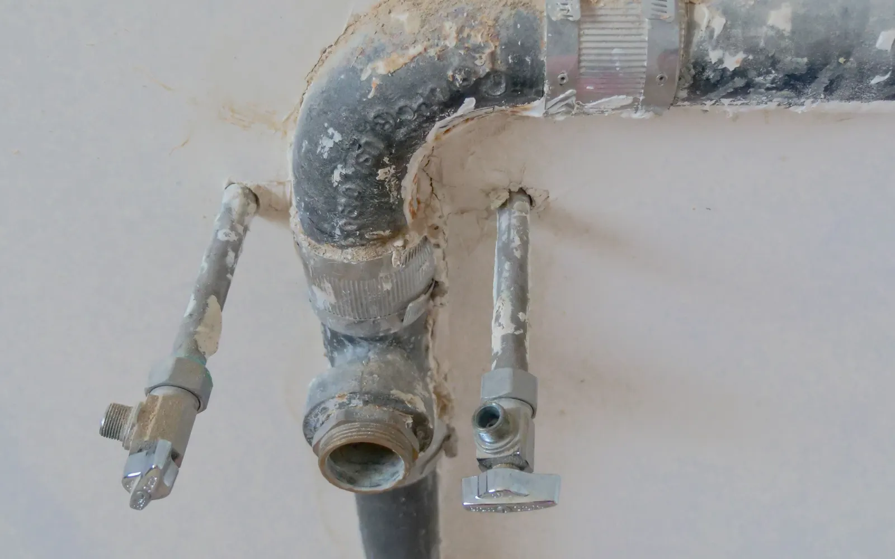
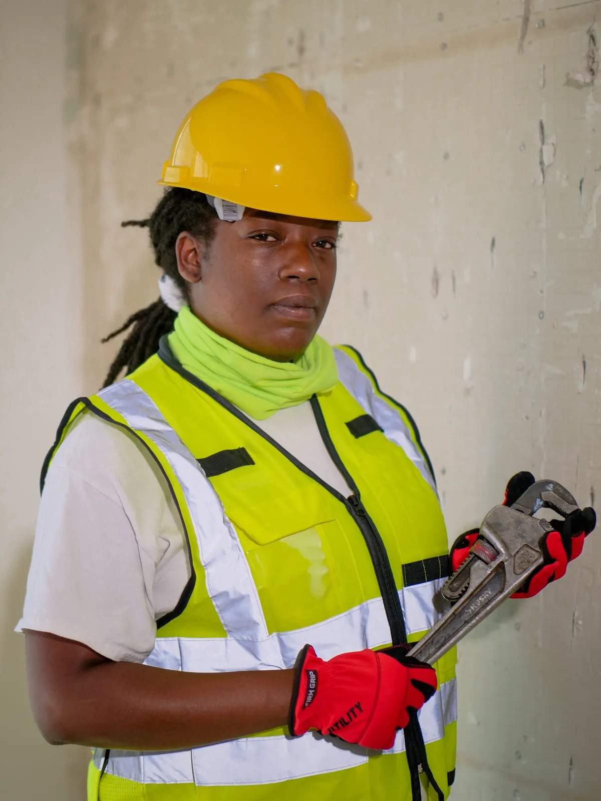
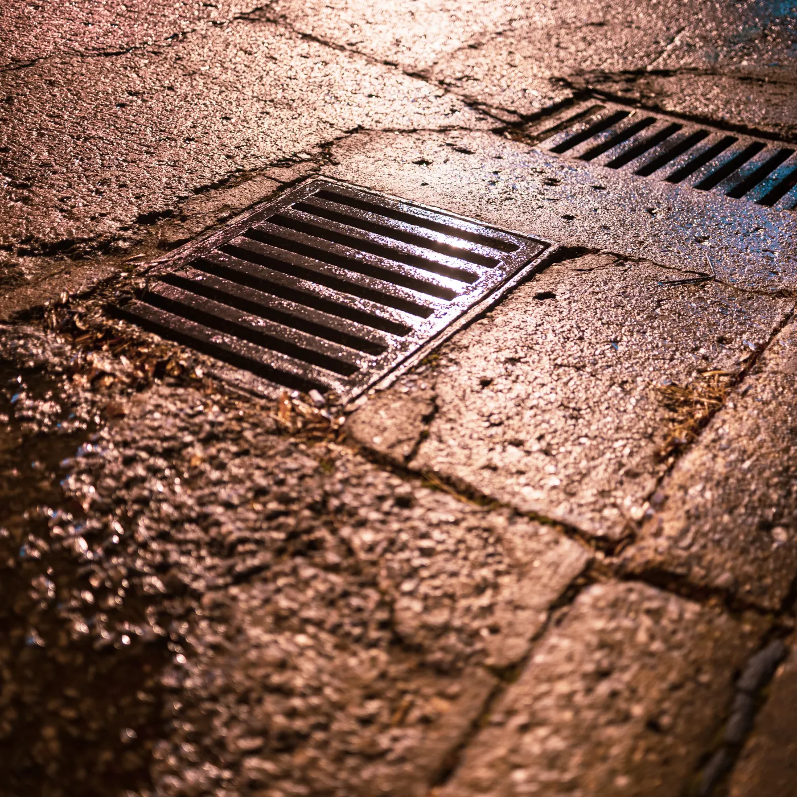
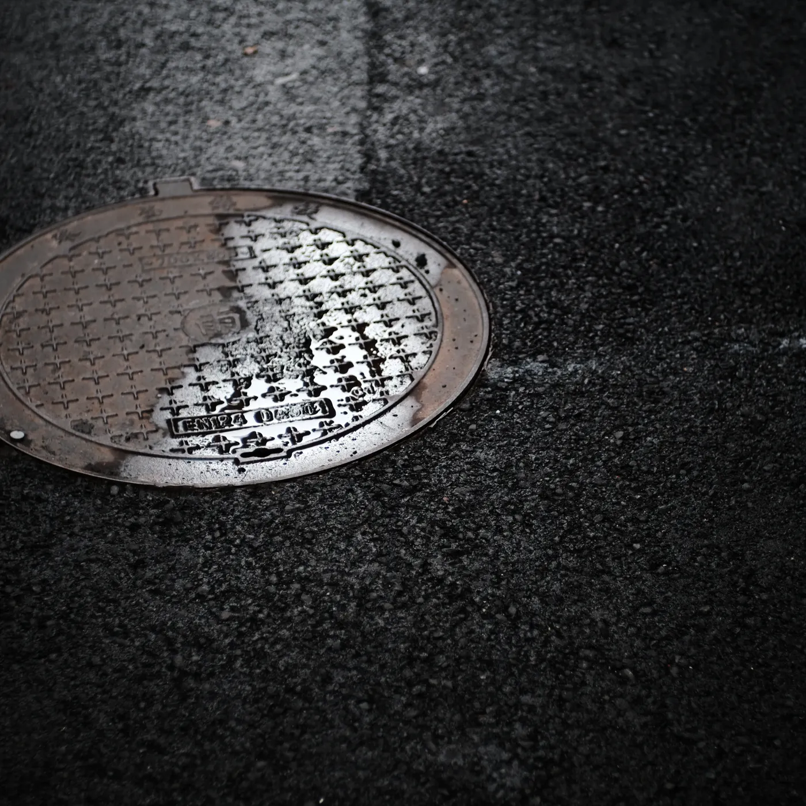
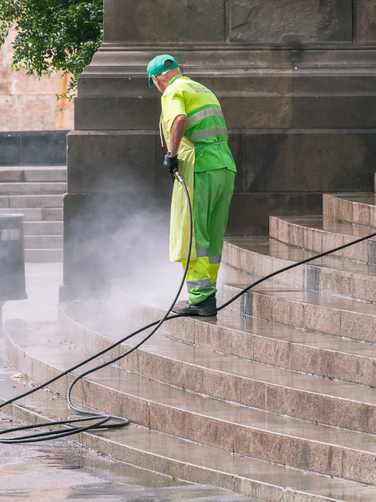
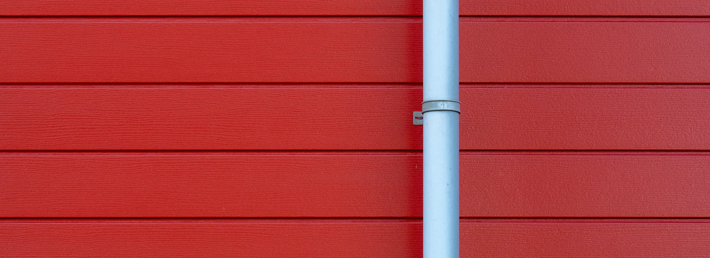
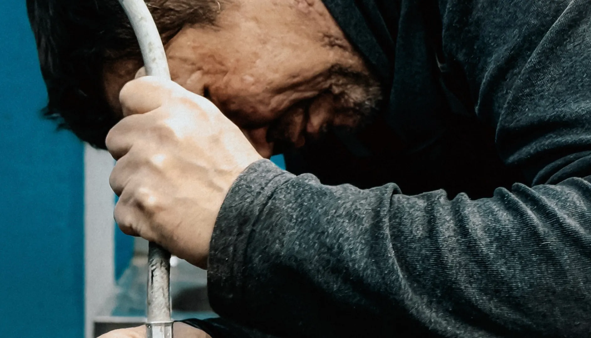

Destapación de cañerías
Pluvial, fluvial, cloacal y domiciliaria.
Urgencias 24 hs · los 365 días
Destapación de cañerías pluvial, fluvial y cloacal con máquinas, hidrojet y videoinspección. Más de 15 años resolviendo obstrucciones en CABA y AMBA.

NUESTROS SERVICIOS

Pluvial, fluvial, cloacal y domiciliaria.

Eliminación de obstrucciones.
Alta presión para resultados efectivos.
Diagnóstico preciso sin roturas.
Para todo tipo de obstrucciones.
Prevención y mantenimiento.

Recuperación y mantenimiento con equipos especializados.
NUESTRO PROCESO
Agua que no baja, olor o retorno: el síntoma típico de una cañería tapada.
Bajamos cámara para ver exactamente dónde y qué la está tapando, sin romper nada.
Agua a alta presión o el equipo indicado, según el diagnóstico.
Flujo normal restablecido. Servicio garantizado.

EL DIFERENCIAL
El agua a alta presión llega donde una sonda tradicional no perfora: arrastra grasa, sedimento y raíces finas de las paredes internas de la cañería, dejándola limpia por dentro, no solo destapada.

LA SOLUCIÓN PROFESIONAL
PARA TODO TIPO DE OBSTRUCCIONES
TRABAJAMOS PARA
POR QUÉ ELEGIRNOS
Al servicio de la comunidad, resolviendo obstrucciones de todo tipo.
Las urgencias no esperan y nosotros tampoco.
Diagnóstico honesto y el equipo justo para cada obstrucción.

ZONA DE COBERTURA
Nos movemos por toda la Ciudad de Buenos Aires y el Gran Buenos Aires para llegar rápido cuando lo necesitás.
Consultar mi zonaCLIENTES QUE YA NOS LLAMARON
"Un caño cloacal tapado un domingo a la noche. Vinieron en menos de una hora y lo resolvieron con el hidrojet."
"Usamos su servicio en el frigorífico para las rejillas de grasa. Puntuales y con equipo de verdad."
"Hicieron la videoinspección antes de romper nada. Encontraron raíces en el caño pluvial y lo resolvieron con hidrojet."
PREGUNTAS FRECUENTES
Sí, el servicio de urgencias funciona las 24 horas, los 365 días del año, en toda CABA y AMBA.
En la mayoría de los casos no. La videoinspección permite diagnosticar sin roturas, y el hidrojet y los equipos desobstructores resuelven la obstrucción desde adentro de la cañería.
Limpieza a alta presión de cañerías pluviales, fluviales y cloacales, pensada para eliminar obstrucciones y sedimentos con resultados más efectivos que una sonda tradicional.
Sí, además de hogares y empresas, trabajamos con industrias, frigoríficos, countrys, parrillas y restaurantes.
¿SE TE TAPÓ ALGO?
Atención de urgencias las 24 horas, los 365 días, en CABA y AMBA.
Escribir por WhatsApp